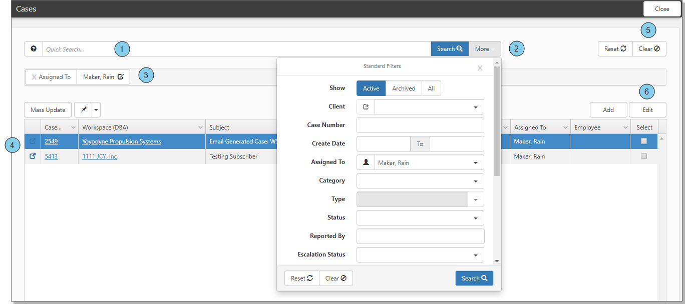

All search pages in

The numbered items in the example correspond to the following list:
Quick Search: Quickly search a few of the most commonly searched fields.
More: Detailed search can include the same fields as Quick search, but More searches are always equals searches.
Filter chiclets: Chiclets represent the currently selected filters.
Search results: Filtered records list.
Clear search filters: Clears all search filters.
Edit record: Select a record in the search results and click Edit to open the record.
Topics in this section